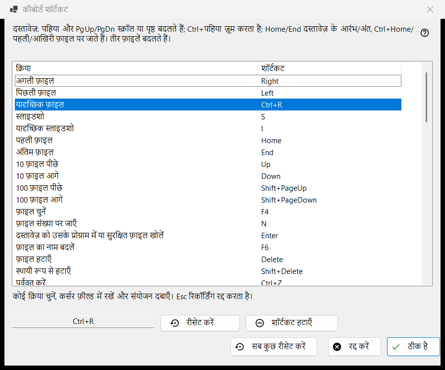
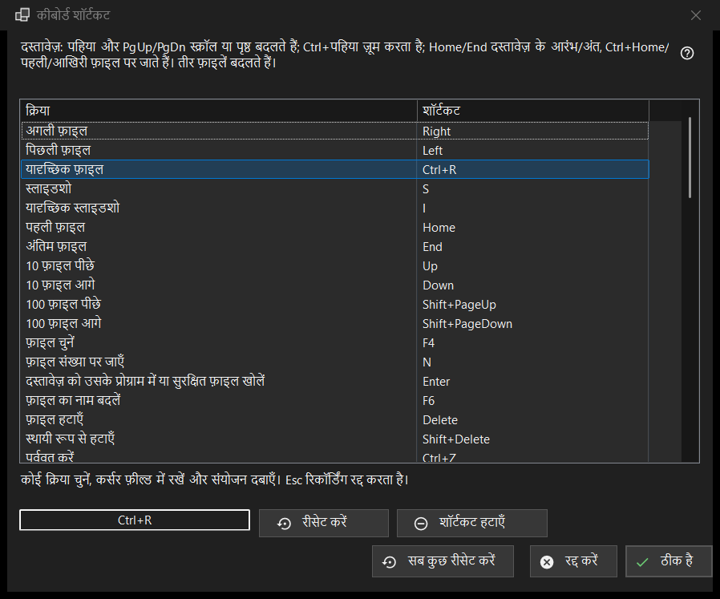

कीबोर्ड शॉर्टकट
यह किस लिए है
व्यूअर की उन सभी क्रियाओं की सूची जिनकी कुंजी आप बदल सकते हैं, साथ में वह शॉर्टकट जिस पर वे अभी प्रतिक्रिया देती हैं। यह सेटिंग्स के फ़ाइलें और सिस्टम पृष्ठ में, कीबोर्ड शॉर्टकट वाली पंक्ति के कॉन्फ़िगर करें.. बटन से खुलती है। यह विंडो एक कार्यकारी प्रति में बदलाव करती है: जब तक आप ठीक है बटन नहीं दबाते, आपकी प्रोफ़ाइल में कुछ नहीं पहुँचता।


इस क्रम में
- सेटिंग्स खोलें, फ़ाइलें और सिस्टम पर जाएँ और कीबोर्ड शॉर्टकट वाली पंक्ति में कॉन्फ़िगर करें.. दबाएँ।
- सूची में कोई क्रिया चुनें।
- सूची के नीचे के फ़ील्ड पर क्लिक करें और नया संयोजन दबाएँ।
- अगर वह संयोजन पहले से किसी और क्रिया के पास है, तो शॉर्टकट बदलें, उस कार्य से हटाएँ या रद्द करें में से चुनें।
- दूसरी क्रियाओं के लिए यही दोहराएँ; ज़रूरत हो तो रीसेट करें, शॉर्टकट हटाएँ या सब कुछ रीसेट करें का उपयोग करें।
- बदलाव रखने के लिए ठीक है दबाएँ, या सारे बदलाव छोड़ने के लिए रद्द करें।
तत्व
क्रिया और शॉर्टकट की सूची
हर पंक्ति एक क्रिया और उसका मुख्य शॉर्टकट दिखाती है; जिस क्रिया की कोई कुंजी नहीं है उसके आगे निर्दिष्ट नहीं लिखा होता है। दस फ़ोल्डर स्लॉट फ़ोल्डर 1..0 में ले जाएँ और फ़ोल्डर 1..0 में कॉपी करें के रूप में दिखते हैं (अंक कुंजियाँ ले जाती हैं, Shift के साथ ऊपरी पंक्ति का अंक कॉपी करता है)। कुछ क्रियाएँ फ़ैक्टरी की अतिरिक्त कुंजियों पर भी चलती हैं (अगली फ़ाइल Space और PageDown पर भी चलती है)। सूची में केवल मुख्य कुंजी दिखती है, लेकिन जैसे ही आप क्रिया को नया शॉर्टकट देते हैं, उसकी सभी पुरानी फ़ैक्टरी कुंजियाँ काम करना बंद कर देती हैं। सूची के ऊपर का पाठ दस्तावेज़ों की उन स्थायी कुंजियों (व्हील, PgUp/PgDn, Home/End, तीर) के नाम बताता है जो सूची में नहीं हैं। कार्रवाई शेड्यूल किए गए ऑपरेशन Share Manager की शेड्यूल किए गए ऑपरेशन विंडो खोलती है; डिफ़ॉल्ट रूप से इसकी कोई कुंजी नहीं है - कीबोर्ड से विंडो खोलने के लिए इसे एक कुंजी दें।
संयोजन रिकॉर्ड करना
कोई पंक्ति चुनें, फिर सूची के नीचे के फ़ील्ड पर क्लिक करें (या पंक्ति पर डबल-क्लिक करें) और कुंजियाँ दबाएँ; चाहें तो Ctrl, Shift या Alt के साथ। फ़ील्ड पूरा संयोजन एक साथ रिकॉर्ड करता है, और अकेला मॉडिफ़ायर संयोजन नहीं माना जाता। Esc कुछ रिकॉर्ड किए बिना फ़ील्ड से बाहर निकल जाता है। बदलाव सूची में तुरंत दिखता है, पर अभी वह केवल कार्यकारी प्रति में है।
जो कुंजियाँ निर्दिष्ट नहीं की जा सकतीं
F1, F10, F11, Esc, Windows कुंजियाँ, Menu कुंजी, Alt+Tab, Alt+F4 और Ctrl+Alt+Delete Windows या प्रोग्राम की हैं। इनमें से कोई दबाने पर यह संदेश आता है: यह संयोजन सिस्टम या प्रोग्राम द्वारा आरक्षित है और निर्दिष्ट नहीं किया जा सकता। कुछ नहीं बदलता।
जो संयोजन पहले से लिया हुआ है
सवाल में मालिक का नाम होता है: संयोजन X पहले से दूसरी क्रिया को दिया गया है। शॉर्टकट बदलें उस क्रिया को वह शॉर्टकट दे देता है जो मौजूदा क्रिया के पास था (हो सकता है कोई न हो)। उस कार्य से हटाएँ उसे निर्दिष्ट नहीं पर छोड़ देता है और संयोजन आपको दे देता है। रद्द करें कुछ नहीं बदलता।
रीसेट करें, शॉर्टकट हटाएँ और सब कुछ रीसेट करें
रीसेट करें चुनी हुई क्रिया को उसकी फ़ैक्टरी कुंजी पर लौटा देता है। शॉर्टकट हटाएँ क्रिया को बिना किसी कुंजी के छोड़ देता है, इसलिए उसकी फ़ैक्टरी कुंजी भी काम करना बंद कर देती है; किसी कुंजी को बंद करने के लिए इसका उपयोग करें। सब कुछ रीसेट करें पूछता है: क्या सभी शॉर्टकट डिफ़ॉल्ट पर लौटा दें? डिफ़ॉल्ट पर लौटाएँ विंडो में आपके सारे बदलाव मिटा देता है; रद्द करें उन्हें रखता है।
ठीक है और रद्द करें
ठीक है पूरा नक्शा प्रोफ़ाइल में सहेज देता है और व्यूअर उसे तुरंत इस्तेमाल करता है। रद्द करें विंडो बंद करता है और प्रोफ़ाइल को बिल्कुल वैसा ही छोड़ता है जैसी वह थी। वीडियो और ऑडियो की कुंजियाँ (रोकना, म्यूट, आवाज़, आगे-पीछे जाना, गति, फ़्रेम-दर-फ़्रेम, ट्रैक) उस मीडिया पर काम करती हैं जो चल रहा है।